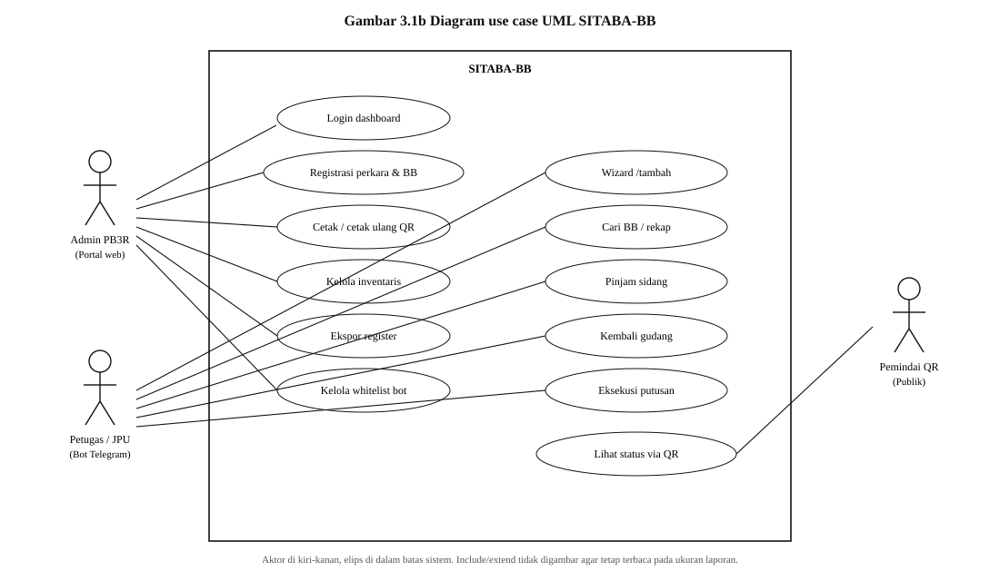
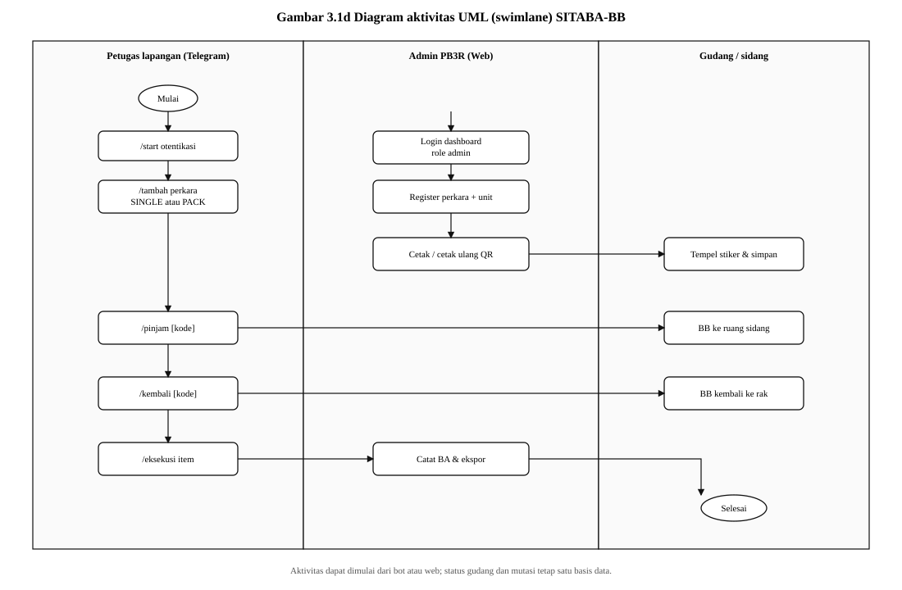

Diagram Alur Proses Bisnis dan Unified Modeling Language (UML)
SITABA-BB — Kejaksaan Negeri Wajo, Seksi PB3R
Gambar 3.1 menampilkan empat pandangan yang saling melengkapi: alur proses bisnis gudang BB, diagram use case, diagram kelas, dan diagram aktivitas ber-swimlane. Nama sistem yang benar adalah SITABA-BB (Sistem Informasi Tata Kelola Barang Bukti), bukan SIBATA-BB.


